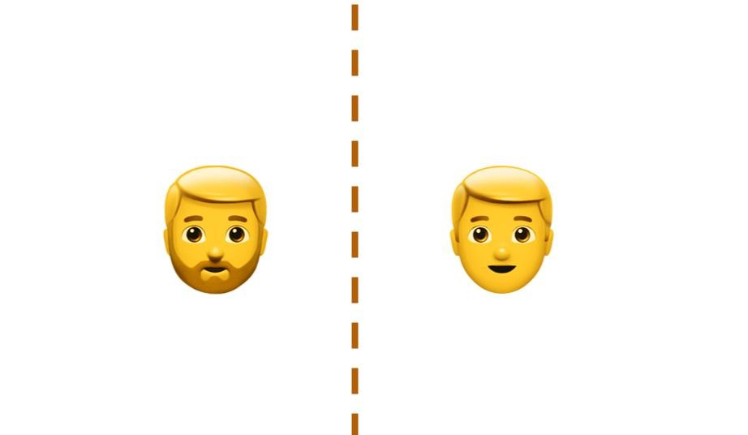

About
I study language processing, language development, and the cognitive mechanisms that underlie these processes-- such as attention, memory, and cognitive control. I work with Toby Mintz and have collaborated with Elsi Kaiser. My current research focuses on disfluencies (e.g. uh's and um's) and uses eyetracking and mouse tracking methods in lab and online, as well as computational modelling performed on large text databases of conversational interactions (CHILDES) . The research is generously supported by the NSF Doctoral Dissertation Research Improvement Grant.
In the past, I also worked heavily with different methods, including other behavioral methods with infants and young children, surveys using Qualtrics and REDCap, mining electronic medical records, analyzing interview transcriptions, and annotating video data from field studies. The products of these projects are further described in my resume and CV.
Select Research Projects
Impact of disfluencies on prediction and language development
 Speakers frequently say uh's and um's (disfluencies), and adults will shift their beliefs about what a speaker will say next. In a set of studies, I examine what happens when children hear uh's, and how it affects their language development. Findings show that children consider alternative sentence structures when they hear disfluencies, and this consideration impacts the types of sentences they prefer in the future.
Speakers frequently say uh's and um's (disfluencies), and adults will shift their beliefs about what a speaker will say next. In a set of studies, I examine what happens when children hear uh's, and how it affects their language development. Findings show that children consider alternative sentence structures when they hear disfluencies, and this consideration impacts the types of sentences they prefer in the future.
Research Method: In lab eye-tracking (Tobii T120 and PyGaze); At home "eye-tracking" (Lookit); Usability testing to ensure smooth user interactions and accurate measurements across different devices, platforms, and internet speeds; Telemetry analysis
Data Analysis: Bayesian multi-level modelling and cluster permutation analysis on R
Impact and Awards: Chiang & Mintz, BUCLD 2020 , Chiang & Mintz, BUCLD 2021 , Funding from the NSF, Paula Menyuk Award
Speaker identity and structural priming
Research Method: Mouse-tracking implemented on Qualtrics (Adapted Mathur & Reichling, 2020 to accomodate audio and timed visual presentation using Javascript and HTML); Usability testing to ensure smooth user interactions and accurate measurements across different devices, platforms, and internet speeds; Telemetry analysis
Data Analysis: Model Comparisons on R (frequentist/Bayesian multi-level modelling and robust methods)
Impact and Awards: Chiang & Mintz, AMLaP 2021 ; Funding from USC Dornsife College and USC Psychology Department
Linguistic representation and memory
 How information is presented can impact how easily it is recalled. For example, a more detailed description of a person, such as bearded man rather than man, can make it easier to recall the information. What happens when a differently worded description, like man with a beard, also taxes memory? Can information still be more easily recalled? Can additional context help with this recall?Research Method: Reaction Time Measures (Self-Paced Reading)
Data Analysis: Multi-level modelling on R
Impact: Chiang, Lu, & Kaiser, AMLaP 2019 , Chiang, Lu, & Kaiser, CAMP3 2019
Making Patient Care More Equitable
Approximately one-fifth of children in the United States are estimated to suffer from a mental health disorder. However, a majority do not receive treatment or experience a delay in receiving treatment. I worked with colleagues from the Massachusetts General Hospital to understand and improve screening measures that help doctors identify children who are at risk of a mental health disorder. I also investigated how models of psychiatric care could be improved in an underserved Latinx community.Research Method: Interviews, Surveys (REDCap), Electronic Medical Records
Data Analysis: ANOVA, Logistic Regression, Factor Analysis, Receiver operating characteristic Curve, Confirmatory Factor Analysis on SPSS and STATA
Impact: Publications in Pediatrics, Academic Pediatrics, Journal of Health Care for the Poor and Underserved
Resume and CV
Click on the below buttons to get to my resume and CV. My resume will discuss details about my work experience, while my CV will contain more details about my academic output, teaching, and mentoring experience.Contact me
cindyc[at]usc[dot]edu
Address
Department of Psychology
3620 McClintock Avenue
Seeley G. Mudd 501
Los Angeles, CA 90007 USA